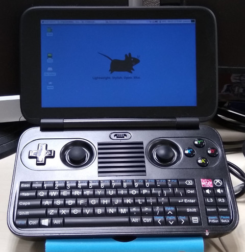
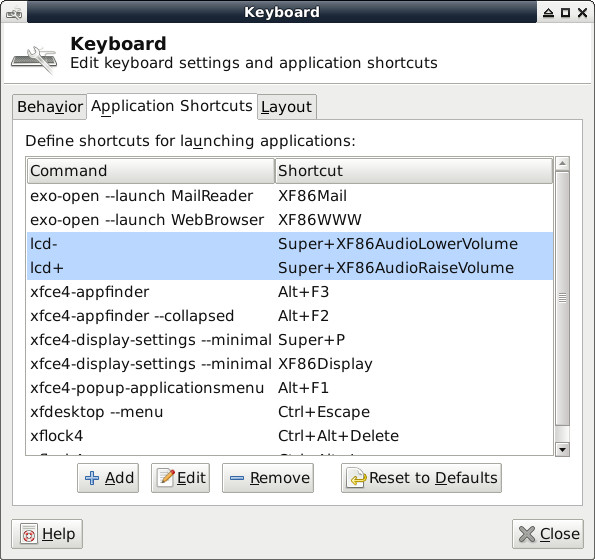
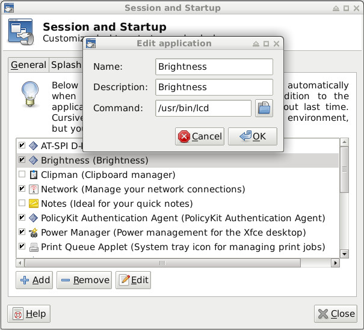

安裝步驟如下：
1. 下載Debian 9.0 ISO並且制作USB開機片
2. 接著透過USB開機(Fn + F7)並按照一般安裝步驟就可以安裝完成
3. 於安裝中，選擇使用界面為XFCE
4. 安裝其它需要套件(先透過其它USB網卡上網)
$ sudo apt-get install xinput sudo python -y $ cd $ wget https://github.com/steward-fu/website/releases/download/gpdwin/bin_util.7z $ 7za x bin_util.7z $ cd gpdwin_util $ sudo ./run.sh $ sudo reboot
完成



